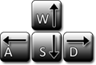

Welcome to wxChaos
With this program you'll be able to explore the beauty and the chaotic forms of fractals.
To make a zoom just click and drag on the screen. To zoom back just right click on the fractal.
Use the arrow keys or WASD to navigate through the screen.

To view more fractals you can select more formulas on the fractal -> Formula menu. Don't forget to play around with the color options to explore fractals with different algorithms.
Have fun!